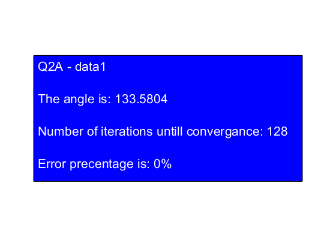
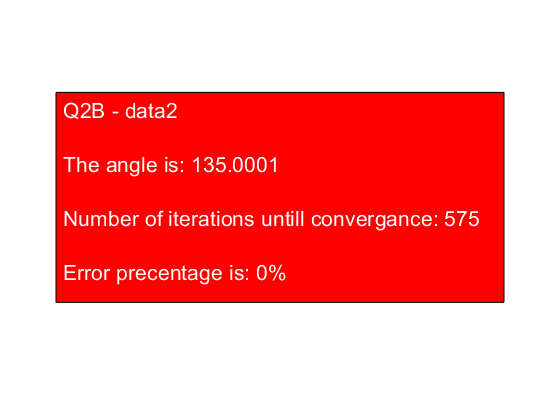
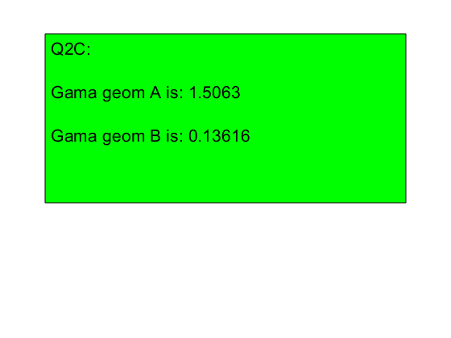
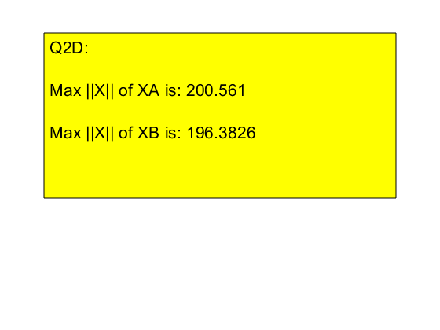
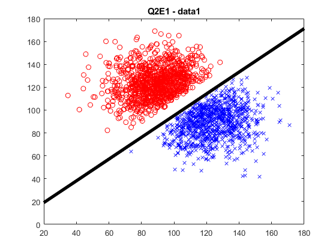
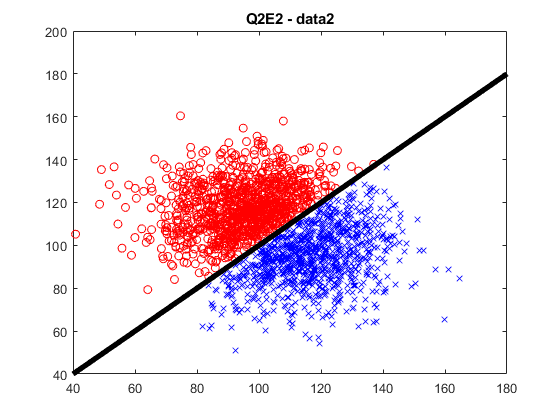

Contents
clear
Question 2.A - training the perceptron
load 'data1.mat'
XA=X;
yA=y;
dim1=size(XA);
[thetaA,kbA]=my_perceptron_train(X, y);
erA=my_perceptron_test(thetaA, XA, yA);
angB=(thetaA'*[1,0]')/((norm(thetaA)*norm([1,0]')));
angB=acosd(angB);
figure(1)
strH='Q2A - data1';
str1=['The angle is: ',num2str(angB)];
str2=['Number of iterations untill convergance: ',num2str(kbA)];
str3=['Error precentage is: ',num2str(erA),'%'];
t1 = annotation('textbox','string',{strH,' ',str1,' ',str2,' ',str3 },'VerticalAlignment','top');
t1.FontSize = 16;
t1.Position=[0.1 0.28 0.8 0.5];
t1.BackgroundColor='blue';
t1.Color=[1 1 1];

Question 2B - same as A,only with data2
load 'data2.mat'
XB=X;
yB=y;
dim2=size(XB);
[thetaB,kbB]=my_perceptron_train(XB, yB);
erB=my_perceptron_test(thetaB, XB, yB);
figure(2)
angB=dot(thetaB,[1,0])/(norm(thetaB)*norm([1,0]));
angB=acosd(angB);
strH='Q2B - data2';
str1=['The angle is: ',num2str(angB)];
str2=['Number of iterations untill convergance: ',num2str(kbB)];
str3=['Error precentage is: ',num2str(erB),'%'];
t2 = annotation('textbox','string',{strH,' ',str1,' ',str2,' ',str3 },'VerticalAlignment','top');
t2.FontSize = 16;
t2.Position=[0.1 0.28 0.8 0.5];
t2.BackgroundColor='red';
t2.Color=[1 1 1];

Question 2c -calc delta geom
figure(3)
min1=Inf;
min2=Inf;
max1=0;
max2=0;
for i=1:dim1(1)
xt=XA(i,:);
d1=abs( (thetaA'*xt')/norm(thetaA) );
if(d1<min1), min1=d1; end
xt=norm(xt);
if(xt>max1) , max1=xt; end
end
for i=1:dim2(1)
xt=XB(i,:);
d2=abs( (thetaB'*xt')/norm(thetaB) );
if(d2<min2), min2=d2; end
xt=norm(xt);
if(xt>max2) , max2=xt; end
end
strH='Q2C:';
str1=['Gama geom A is: ',num2str(min1)];
str2=['Gama geom B is: ',num2str(min2)];
t4 = annotation('textbox','string',{strH,' ',str1,' ',str2},'VerticalAlignment','top');
t4.FontSize = 16;
t4.Position=[0.1 0.4 0.8 0.5];
t4.BackgroundColor='green';
t4.Color=[0 0 0];

Q2d - max norms (max1, max2) were calculated in previous section - C.
figure(4)
strH='Q2D:';
str1=['Max ||X|| of XA is: ',num2str(max1)];
str2=['Max ||X|| of XB is: ',num2str(max2)];
t4 = annotation('textbox','string',{strH,' ',str1,' ',str2},'VerticalAlignment','top');
t4.FontSize = 16;
t4.Position=[0.1 0.4 0.8 0.5];
t4.BackgroundColor='yellow';
t4.Color=[0 0 0];

Q2E
figure(5)
plot_theta(XA,yA,thetaA);
title('Q2E1 - data1');
set(gca,'Color','y')
figure(6)
plot_theta(XB,yB,thetaB);
title('Q2E2 - data2');
 